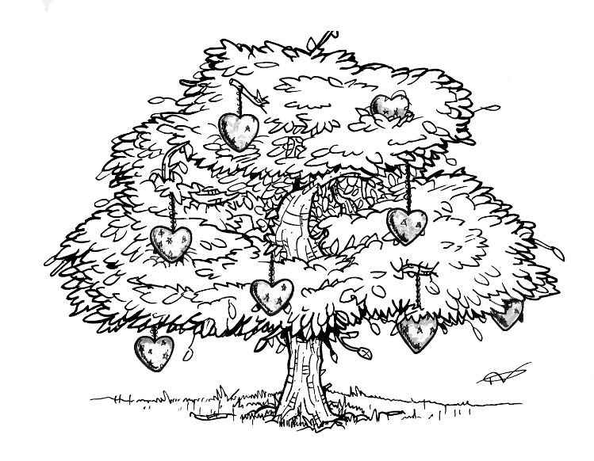

Nouvelle écrite pour le concours de nouvelles de l'Insatiable
Thème : placer la phrase "Sa mort ne lui laissa pas le temps de réagir."
Classement : quatrième
Février 2015
La lumière aveuglante perçait les rideaux fins de la chambre. Janvier amenait avec lui la longueur de ses nuits, mais aussi l’éclat de ses journées. Pas un nuage ne semblait perturber ce ciel matinal. Marie ouvrit la fenêtre et laissa l’air glacial lui piquer les joues. C’était le genre d’instant court où elle se sentait pleinement vivante. Eveillée.
Elle quitta néanmoins ce moment de plénitude pour retourner vers la futilité des obligations quotidiennes. Les valises de la veille reposaient sur le sol, attendant le long rangement de leur propriétaire. Marie soupira, avant de commencer à défaire la première. Les vêtements légers qu’elle en sortait lui rappelaient la chaleur de ces vacances passées. Partir avec Cécile lui avait fait un bien fou – oubliant pour une semaine les soucis du travail et de la solitude qu’elle vivait dans cette grande maison.
Elle empila minutieusement les tissus selon leur place attribuée sur les étagères du placard, lui aussi beaucoup trop volumineux pour sa seule garde-robe. Arriver à la fin de ce rangement fut un petit soulagement pour la femme aux yeux amandes. Son dos la faisait souffrir ; elle n’avait plus sa jeunesse d’autrefois. Et ses cinquante années s’observaient de plus en plus sur son corps fatigué. Quelques rides fines se traçaient sur son doux visage. Mais le bronzage des vacances avait au moins réussi à cacher la blancheur habituelle de sa peau – une excellente nouvelle pour Marie.
Cette dernière entreprit ensuite, comme après chaque fois qu’elle s’absentait plusieurs jours, d’arroser les plantes solitaires de son large jardin. Elle enfila un lourd manteau d’hiver – qu’elle trouvait laid, mais peu importait, personne ne l’observerait chez elle -, avant d’ouvrir la porte d’entrée et d’affronter le froid hivernal de janvier. Marie remplit son arrosoir vert, vieux et usé, puis irrigua religieusement chaque arbuste, chaque fleur qui ornait sa maison.
Le choc arriva lorsqu’elle se baissa pour abreuver le petit buis qui poussait dans le coin Nord du jardin. L’arbuste ne possédait plus une seule feuille verte, ses branches pendaient vers le sol. Aucun doute n’était possible : il ne montrait plus une trace de vie. Sa mort ne lui laissa pas le temps de réagir. Marie lâcha le vieil arrosoir, qui laissa l’eau s’échapper sur la pelouse, telle une marée dévastatrice. Ses genoux se mirent à vaciller, ses mains à trembler. Une triste vérité s’offrait à elle : le dernier reste de son amour envers Frédéric venait de mourir. Là, juste devant elle. Et elle n’y pouvait rien.
Ils avaient planté cet arbuste ensemble, lors des tous premiers jours de leur relation. Un symbole fort, insensible au temps qui passe. Du moins, c’était ce que Marie croyait. Mais l’arbre était resté, leur amour parti. Frédéric avait trouvé une femme plus jeune, plus jolie. Il avait demandé le divorce. Et cela faisait cinq ans que Marie vivait seule dans cette maison trop grande pour elle.
Mais le petit buis était mort lui aussi. Le souvenir de Frédéric avec. Elle ne parvenait plus à retracer les traits de ce visage qu’elle avait tant aimé, tant chéri. C’était pourtant si simple… Elle connaissait par cœur la couleur de ses yeux, celle de ses cheveux, leur texture, la rondeur de ses joues lorsqu’il souriait... Et pourtant, devant la carcasse de l’arbuste, devant la charogne de leurs amours défuntes, elle perdait l’équilibre.
Oui, elle avait oublié Frédéric.
Après un long moment de stupéfaction, elle s’affaira à arracher les restes du buis. Cela lui prit un peu de temps, vu la maladresse de ses membres engourdis. Une fois ce dur travail réalisé, Marie alluma un feu dans la cheminée du salon et y jeta le petit arbre. Ses gestes étaient saccadés, dû à la peur qui lui prenait l’estomac. Elle avait perdu le souvenir de cette époque joyeuse…
Le feu brûla toute la nuit. Il consumait avec ardeur les dernières malheureuses traces de Frédéric. Lorsque Marie se leva le lendemain matin, elle ramassa les cendres dans la cheminée, qu’elle plaça dans une ancienne boîte à biscuits en fer. Sans attendre une seconde de plus, elle prit la voiture et conduisit jusqu’à ce qu’elle ressente la fatigue peser sur ses yeux amande. Elle s’arrêta devant une plage et descendit de son véhicule, sans oublier d’attraper sa boîte métallique.
Marie s’avança jusqu’à la mer, ouvrit le récipient et laissa le vent emporter les cendres de ses souvenirs. La poussière s'envola haut, formant un nuage noir et épais dans le ciel maritime. Une larme coula le long de sa joue, perle fine contenant toute la douleur de ces cinq dernières années. Puis le nuage se dispersa, la brise se calma. Marie inspira profondément avant de refermer sa boîte.
Elle fit marche arrière pour retourner vers sa voiture, quand elle croisa le regard interrogateur d’un homme, face à elle. Ses pupilles vertes lui firent apprécier la mort de l’arbuste. Le décès du souvenir laissait place à un nouveau champ des possibles.